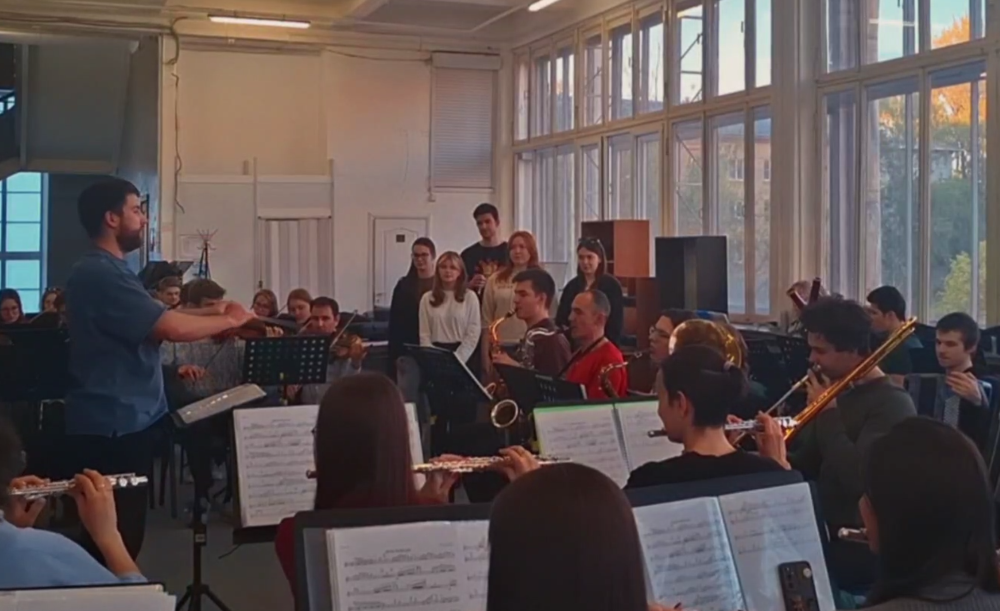
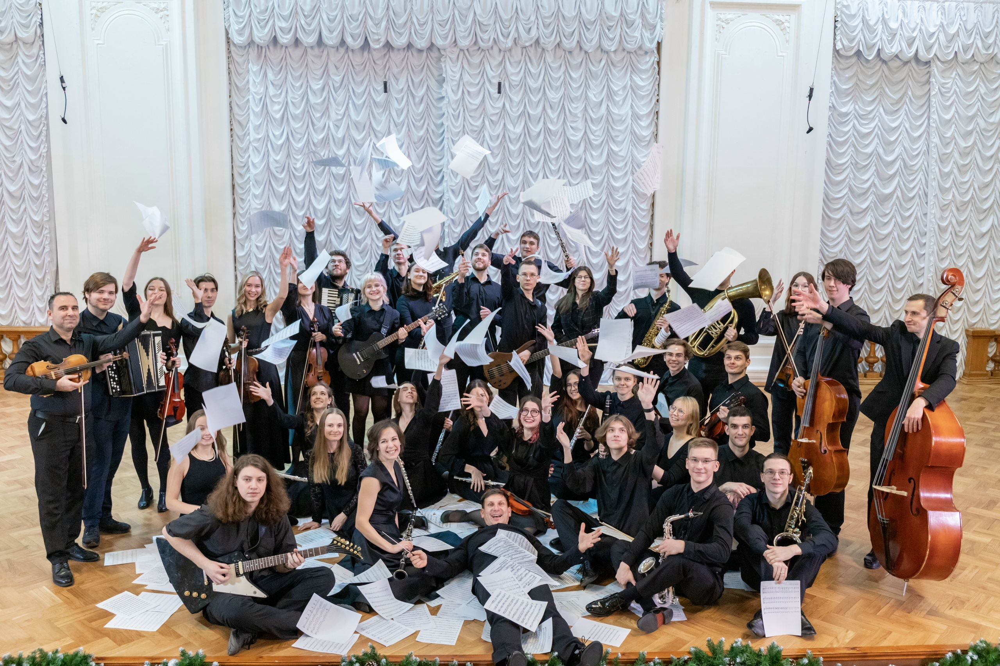
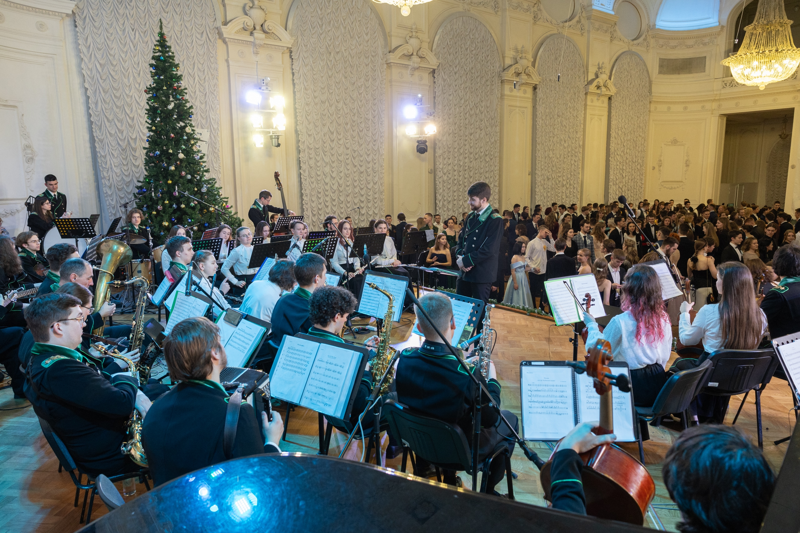
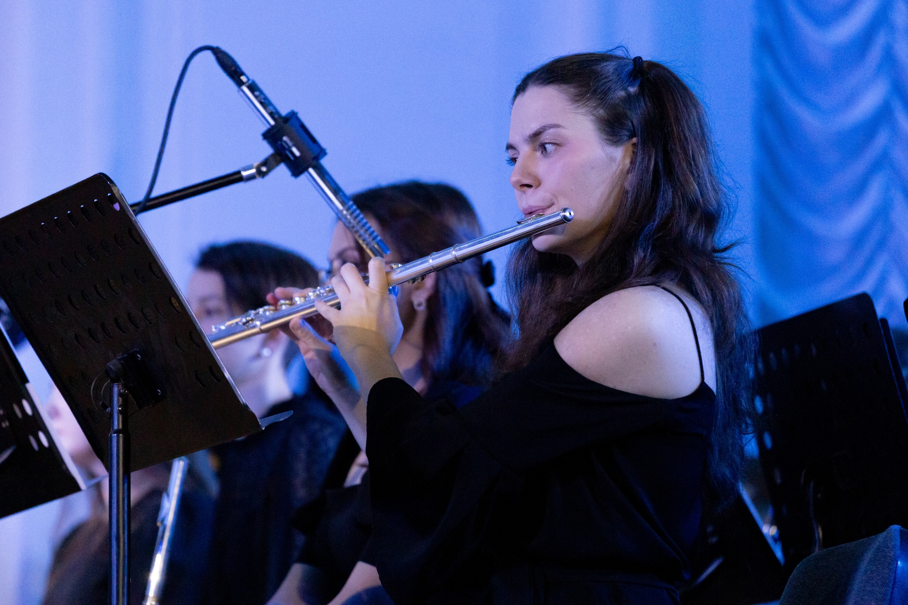
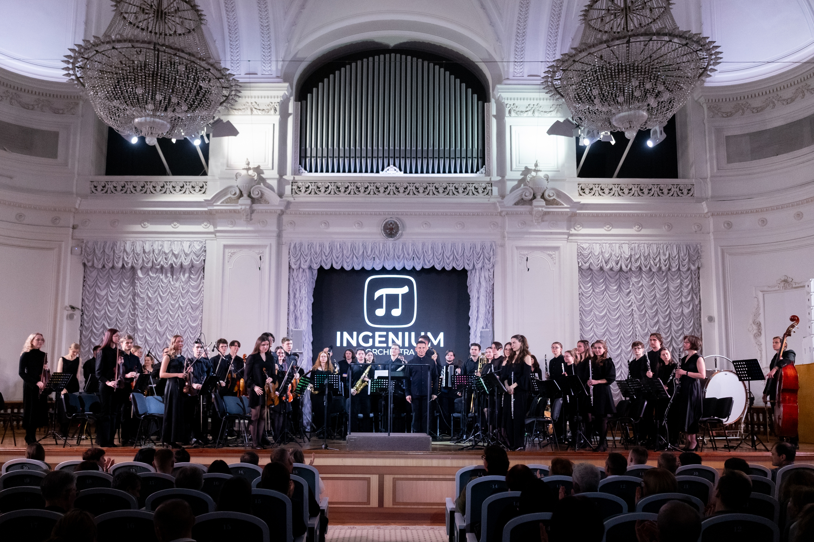
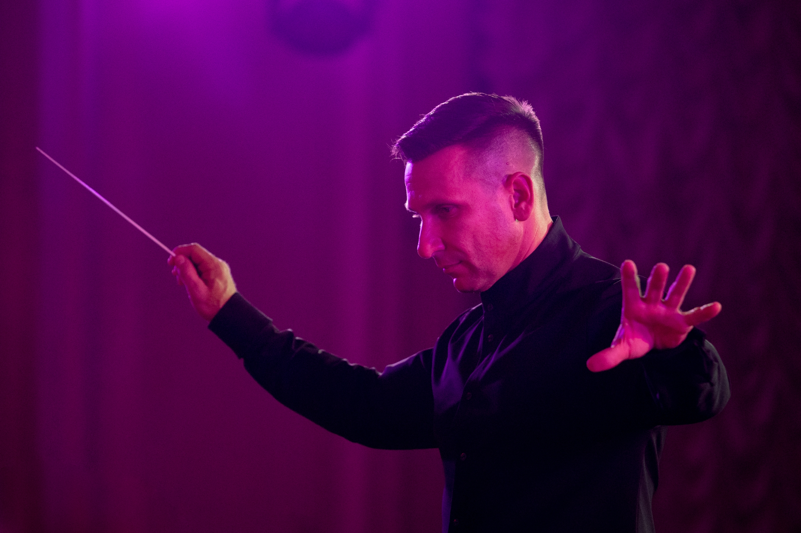
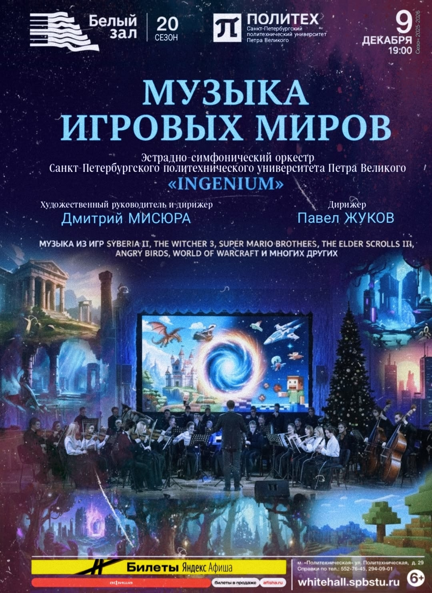
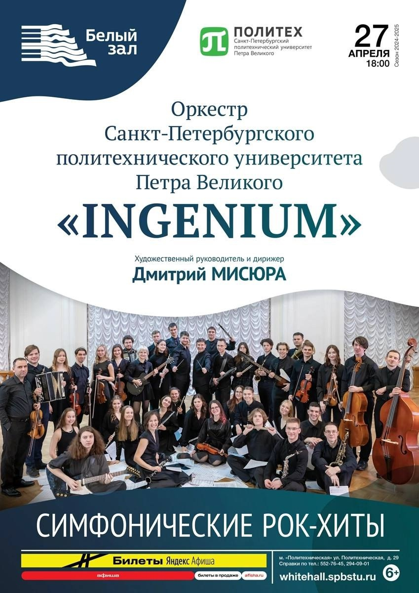
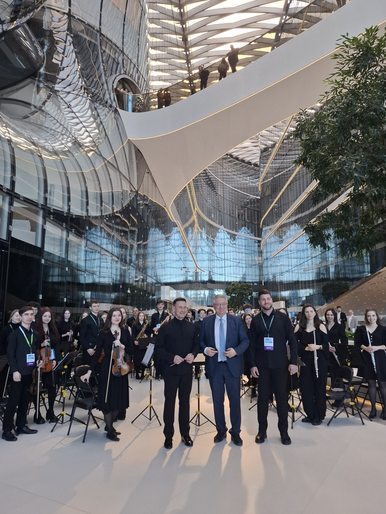
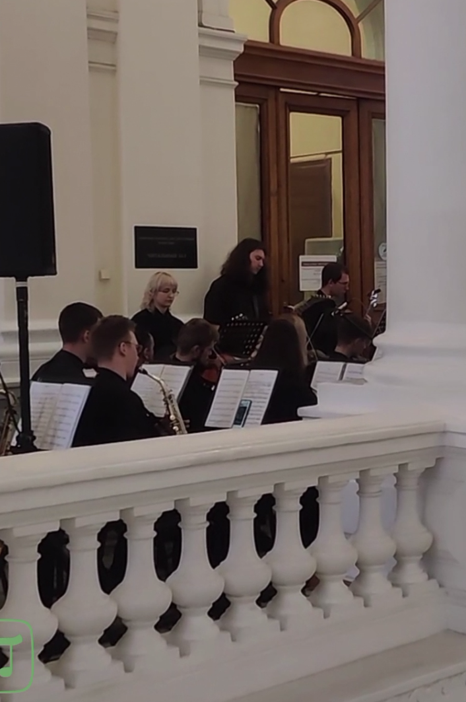

Наша история
От первых студенческих музыкальных инициатив до нового этапа жизни оркестра.
Читать историю →Ingenium orchestra — пространство, где академическая традиция встречается с энергией молодых музыкантов. Мы репетируем, выступаем и создаём события, которые хочется разделить с другими
Познакомиться с оркестром Наша история

Оркестр — это десятки индивидуальных голосов, которые учатся звучать вместе. Здесь важны не только техника и знание нот, но и внимание друг к другу, дисциплина, любопытство и смелость пробовать новое.
В основе нашей работы — уважение к музыкальному наследию и желание говорить со слушателем на современном языке. В репертуаре соседствуют произведения разных эпох, жанров и настроений.

От первых студенческих музыкальных инициатив до нового этапа жизни оркестра.
Читать историю →
Как устроен коллектив, какие инструменты звучат и как строится совместная работа.
Узнать больше →
Оркестровая музыка требует особого внимания к деталям. Музыкант одновременно следит за собственной партией, темпом, жестами дирижёра и звучанием соседних инструментов. Постепенно отдельные линии складываются в единое целое — так рождается характер произведения.
Работа над репертуаром начинается с изучения музыкального текста. Участники разбирают ритм и интонацию, уточняют штрихи, динамику и артикуляцию. Затем отдельные фрагменты соединяются, а репетиция превращается в поиск общего звучания. Важны терпение, регулярность и готовность слышать замечания.
Концерт — это встреча с аудиторией и возможность поделиться результатом совместной работы. Для слушателя музыка может стать открытием, воспоминанием или источником вдохновения. Для исполнителя выступление — ответственность и радость общения без слов.

«Оркестр начинается там, где каждый слышит не только себя, но и тех, кто играет рядом» Философия совместного музицирования



